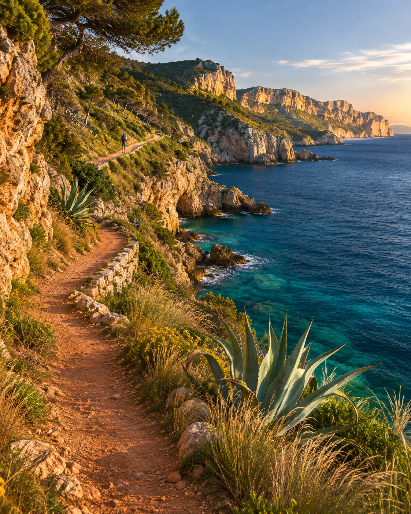

A DAY AWAY
A little further.
A little freer.
A nearby escape, a thoughtful little itinerary, and room to make the day your own.
Open mobile prototype ↗
Find your escape.
Explore a small nearby collection. Search by place or mood; filter coast, nature and city daytrips.
See your day.
Inspect a readable timed itinerary, walking distance, practical advice and an illustrative forecast.
Leave room for it.
Save the coastal trip on this device, set a date, reopen the itinerary or remove the plan.